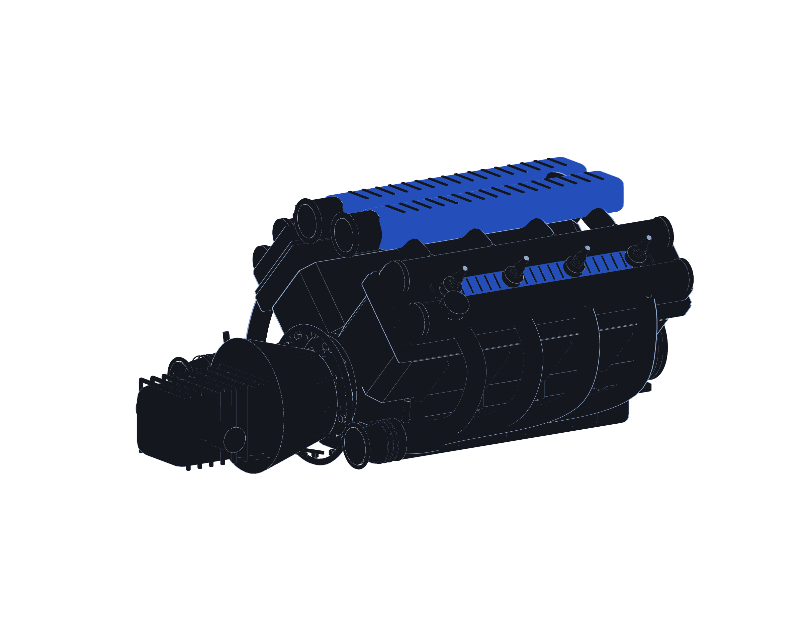

01 / 08
SYSTEM OFFLINESCALE 1:∞
WELCOME UNDER THE HOOD
Every engineer
Every engineer
has an engine.
Here’s what drives mine.
// initialize a little curiosity
kv::Engine engine{"Karthik"};
kv::Engine engine{"Karthik"};
engine.start();
ENGINE SPEED0000 RPM
GEARN